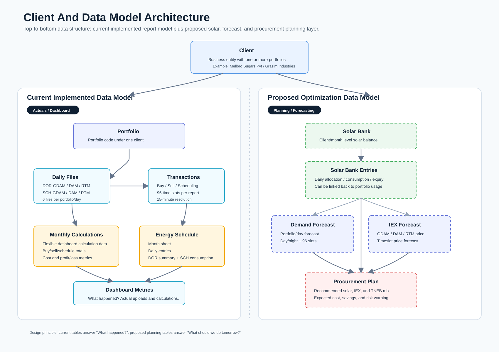

Client And Data Model Architecture
Separate architecture view for the client hierarchy, current report/database model, and proposed planning layer for solar banking, demand forecasting, IEX forecasting, and procurement recommendations.

Separate architecture view for the client hierarchy, current report/database model, and proposed planning layer for solar banking, demand forecasting, IEX forecasting, and procurement recommendations.
